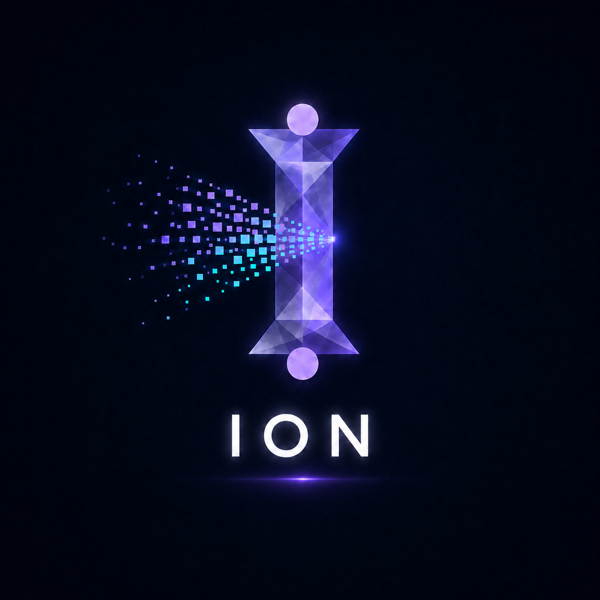
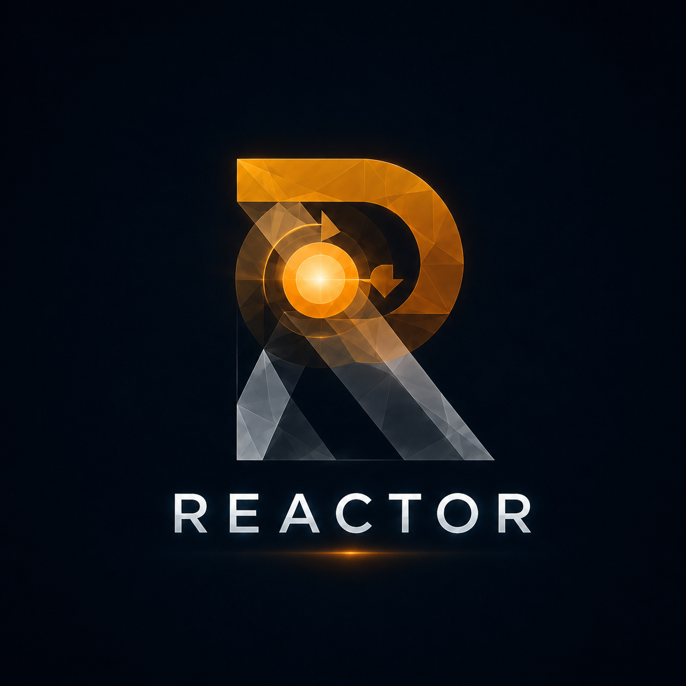

ION数据原子ENTERPRISE INTELLIGENCE RUNTIME
从数据，到智能，
再到控制。
ION 让工业数据成为可用的原子；Catalyst 在 VALENCE 中协调 AI、专家与 Skill，促成信息重组；REACTOR 将新的决策结构转化为受控行动。三款产品共享同一 Runtime，可单独使用，也可组合成完整反应链。
UNIFIED RUNTIMEDATA → AI → CONTROL
 CATALYSTAI 协调与催化
CATALYSTAI 协调与催化
DATA
ACTION

REACTOR工业控制离子化数据，在 Catalyst 作用下改变连接方式，由 VALENCE 形成新智能，再由 REACTOR 作用于现场。
THREE PRODUCTS · ONE RUNTIME
三款产品，可以单独部署，也可以组合成完整反应链。
ION、VALENCE 与 REACTOR 都是可独立交付的产品，并共享一致的 Runtime。客户可以从一个问题开始，随后按业务需要增加第二款或第三款产品，而不必推倒重来。
先部署当前最需要的数据、AI 或控制能力。
任意两款产品共享上下文、接口与运行结果。
ION → VALENCE → REACTOR 贯通数据、AI 与控制。
ION
连接、治理并理解企业数据，让数据成为可被 AI 调用的高活性“离子”。
CORE
AI PRODUCTVALENCE
作为智能中枢连接人、Agent 与任务。Catalyst 在其中负责理解、协调、委派与汇总。
REACTOR
把智能决策转化为可验证、受约束的控制策略，并将现场反馈送回 Runtime。
AI COORDINATOR · INSIDE VALENCE
CATALYST
Catalyst 不是第四款产品，而是 VALENCE 的 AI 协调者：它发现可用能力，选择 Agent 与 Skill，并让任务持续向结果推进。
理解 → 协调 → 委派 → 汇总
DATA · AI · CONTROL
每款产品解决一个清晰问题。
ION 负责数据，VALENCE 负责智能协作，REACTOR 负责控制。边界清楚，所以能独立交付；Runtime 一致，所以能自然组合。
01 · DATA
ION
让企业数据可连接、可理解、可追溯
ION 面向数据库、指标、报表与领域数据，把分散的信息整理成稳定的数据语义，并让业务人员和 AI 都能安全地调用。
- 连接企业数据库与业务数据源
- 统一字段、指标与领域语义
- 自然语言问数、下钻与分析
- 独立部署，或作为数据插件接入 VALENCE
02 · AI CORE
VALENCE
连接人、AI 与专业能力的智能中枢
VALENCE 让 Agent、专家、Skill、任务和自动化共享同一上下文。Catalyst 负责判断该调用谁、何时推进，以及如何把结果带回现场。
- Catalyst 统一理解意图并协调执行
- Agent、专家、Skill 与任务持续协作
- ION、REACTOR 及第三方能力插件化接入
- 自身可作为 API 嵌入其他系统
03 · CONTROL
REACTOR
把智能决策转化为受控行动
REACTOR 面向设备、系统与现场控制，在明确目标、约束和安全边界后生成并运行策略，让 AI 的判断真正作用于业务与物理世界。
- 映射设备、对象与可控变量
- 建立目标、约束与控制策略
- 仿真验证、上线运行与状态反馈
- 独立部署，或作为控制插件接入 VALENCE
ONE REACTION CHAIN
工业智能沿着数据、AI、控制持续流动。
ION · 数据进入反应
连接业务与工业数据，统一口径和语义，让原始信息成为可理解、可追溯、可调用的数据原子。
VALENCE · 智能重新成键
Catalyst 协调 Agent、专家与 Skill，在共享上下文中分析信息、形成判断，并推动任务持续完成。
REACTOR · 决策作用现场
把形成的决策转化为经过约束与安全校验的控制策略，再将执行反馈送回下一轮反应。
OPEN BY DESIGN
向内接插件，向外成为 API。
以 VALENCE 为核心，ION、REACTOR 和第三方产品都可以作为插件进入 Runtime，持续扩展数据、知识、模型与控制能力；同时，VALENCE 也可以整体化身为 API，把 AI 协作与任务执行能力提供给现有门户、业务系统和工业现场。
ION · DATAREACTOR · CONTROL3RD-PARTY PLUGINS
VALENCECORE RUNTIME
VALENCE APIPORTAL / APPMES / ERP / BA